Aug ??st, 2021#
Motivation: fig 2
Show code cell source
# HIDE CODE
import os
import sys
import nibabel as nib
import networkx as nx
from time import time
from pprint import pprint
from copy import deepcopy as dc
from os.path import join as pjoin
from myterial import orange, blue_grey
from IPython.display import display, IFrame, HTML
from matplotlib.colors import rgb2hex, to_rgb
import matplotlib.pyplot as plt
import seaborn as sns
# set style & no interpolalation
import matplotlib
matplotlib.rcParams['image.interpolation'] = 'none'
sns.set_style('whitegrid')
# tmp & extras dir
git_dir = pjoin(os.environ['HOME'], 'Dropbox/git')
tmp_dir = pjoin(git_dir, 'jb-Ca-fMRI/tmp')
extras_dir = pjoin(git_dir, 'jb-Ca-fMRI/_extras')
# GitHub
sys.path.insert(0, pjoin(git_dir, '_Ca-fMRI'))
from register.atlas import load_allen, make_tree_graph
from register.parcellation import Parcellation
from analysis.hierarchical import Hierarchical
from analysis.svinet import *
from utils.plotting import *
from utils.render import *
from model.mouse import Mice
from model.configuration import Config
# warnings
import warnings
warnings.filterwarnings('ignore', category=DeprecationWarning)
import bottleneck as bn
bn.bench_detailed("nanmean", fraction_nan=0.01)
nanmean benchmark
Bottleneck 1.3.2; Numpy 1.20.3
Speed is NumPy time divided by Bottleneck time
1.0% of the array elements are NaN (on average)
Speed Call Array
195.9 nanmean(a) rand(1)
185.7 nanmean(a) rand(10)
106.2 nanmean(a) rand(100)
21.7 nanmean(a) rand(1000)
3.2 nanmean(a) rand(1000000)
109.5 nanmean(a) rand(10, 10)
4.1 nanmean(a) rand(100, 100)
3.4 nanmean(a) rand(1000, 1000)
94.9 nanmean(a, 1) rand(10, 10)
4.9 nanmean(a, 1) rand(100, 100)
3.3 nanmean(a, 1) rand(1000, 1000)
9.9 nanmean(a, 1) rand(100000, 2)
96.3 nanmean(a, 0) rand(10, 10)
4.6 nanmean(a, 0) rand(100, 100)
2.6 nanmean(a, 0) rand(1000, 1000)
2.7 nanmean(a, 0) rand(100, 100, 100)
3.2 nanmean(a, 1) rand(100, 100, 100)
4.0 nanmean(a, 2) rand(100, 100, 100)
229.9 nanmean(a) array(1.0)
bn.bench_detailed("nanmean", fraction_nan=0.2)
nanmean benchmark
Bottleneck 1.3.2; Numpy 1.20.3
Speed is NumPy time divided by Bottleneck time
20.0% of the array elements are NaN (on average)
Speed Call Array
196.3 nanmean(a) rand(1)
188.7 nanmean(a) rand(10)
116.6 nanmean(a) rand(100)
26.5 nanmean(a) rand(1000)
2.7 nanmean(a) rand(1000000)
118.1 nanmean(a) rand(10, 10)
3.8 nanmean(a) rand(100, 100)
2.6 nanmean(a) rand(1000, 1000)
97.8 nanmean(a, 1) rand(10, 10)
4.2 nanmean(a, 1) rand(100, 100)
2.5 nanmean(a, 1) rand(1000, 1000)
5.8 nanmean(a, 1) rand(100000, 2)
96.5 nanmean(a, 0) rand(10, 10)
4.0 nanmean(a, 0) rand(100, 100)
2.2 nanmean(a, 0) rand(1000, 1000)
2.3 nanmean(a, 0) rand(100, 100, 100)
2.5 nanmean(a, 1) rand(100, 100, 100)
2.6 nanmean(a, 2) rand(100, 100, 100)
229.8 nanmean(a) array(1.0)
bn.bench()
Bottleneck performance benchmark
Bottleneck 1.3.2; Numpy 1.20.3
Speed is NumPy time divided by Bottleneck time
NaN means approx one-fifth NaNs; float64 used
no NaN no NaN NaN no NaN NaN
(100,) (1000,1000)(1000,1000)(1000,1000)(1000,1000)
axis=0 axis=0 axis=0 axis=1 axis=1
nansum 39.2 1.8 1.7 2.0 1.9
nanmean 104.8 2.5 2.3 3.1 2.6
nanstd 148.2 1.9 1.9 2.2 2.1
nanvar 139.1 1.9 2.0 2.2 2.3
nanmin 32.5 0.9 3.0 1.1 4.2
nanmax 32.5 1.1 2.9 1.1 4.0
median 116.5 1.2 5.2 1.0 5.0
nanmedian 115.3 5.1 4.8 4.4 4.8
ss 12.6 0.9 0.9 1.0 1.0
nanargmin 88.2 8.9 12.6 4.3 9.1
nanargmax 85.9 9.0 12.5 4.3 9.3
anynan 12.2 0.7 45.5 1.1 40.4
allnan 19.1 197.1 142.0 184.2 122.3
rankdata 51.7 1.9 1.9 2.1 2.1
nanrankdata 54.3 2.1 2.0 2.3 2.2
partition 4.1 1.1 1.6 1.0 1.5
argpartition 4.0 1.1 1.4 1.2 1.7
replace 13.3 2.6 2.7 2.6 2.7
push 1474.2 8.5 8.5 14.3 11.6
move_sum 2909.8 104.9 147.1 271.7 204.9
move_mean 7425.3 146.0 181.8 415.3 259.3
move_std 9370.6 130.2 232.3 249.5 348.8
move_var 9836.1 146.5 248.5 288.7 362.7
move_min 1413.0 16.2 35.7 21.3 44.1
move_max 1243.4 16.9 32.5 20.2 41.8
move_argmin 3100.7 54.1 84.4 59.4 96.1
move_argmax 3004.7 54.1 83.8 59.7 94.9
move_median 2425.0 152.3 150.1 156.1 151.9
move_rank 779.8 1.6 1.3 2.8 2.3
bn.bench(dtype='float128')
Bottleneck performance benchmark
Bottleneck 1.3.2; Numpy 1.20.3
Speed is NumPy time divided by Bottleneck time
NaN means approx one-fifth NaNs; float128 used
no NaN no NaN NaN no NaN NaN
(100,) (1000,1000)(1000,1000)(1000,1000)(1000,1000)
axis=0 axis=0 axis=0 axis=1 axis=1
nansum 0.7 1.0 1.0 1.0 1.0
nanmean 1.1 1.0 1.0 1.0 1.0
nanstd 0.9 1.0 1.0 1.0 1.0
nanvar 0.9 1.0 1.0 1.0 1.0
nanmin 0.6 1.0 1.0 1.0 1.0
nanmax 0.6 1.0 1.0 1.0 1.0
median 1.0 1.0 1.0 1.0 1.0
nanmedian 0.9 1.0 1.0 1.0 1.0
ss 0.9 1.0 1.0 1.0 1.0
nanargmin 0.8 1.0 1.0 1.0 1.0
nanargmax 0.8 1.0 1.0 1.0 1.0
anynan 0.8 1.0 1.0 1.0 1.0
allnan 0.9 1.0 1.0 1.0 1.0
rankdata 1.0 1.0 1.0 1.0 1.0
nanrankdata 1.0 1.0 1.0 1.0 1.0
partition 0.9 1.0 1.0 1.0 1.0
argpartition 0.9 1.0 1.0 1.0 1.0
replace 0.9 1.0 1.0 1.0 1.0
push 1.0 1.0 1.0 1.0 1.0
move_sum 0.9 1.0 1.0 1.0 1.0
move_mean 1.0 1.0 1.0 1.0 1.0
move_std 1.0 1.0 1.0 1.0 1.0
move_var 1.0 1.0 1.0 1.0 1.0
move_min 1.0 1.0 1.0 1.0 1.0
move_max 1.0 1.0 1.0 1.0 1.0
move_argmin 1.0 1.0 1.0 1.0 1.0
move_argmax 1.0 1.0 1.0 1.0 1.0
move_median 1.0 1.0 1.0 1.0 1.0
move_rank 1.0 1.0 1.0 1.0 1.0
bn.test()
============================= test session starts ==============================
platform linux -- Python 3.8.3, pytest-6.2.4, py-1.10.0, pluggy-0.13.1
rootdir: /home/hadi/Dropbox/git/jb-Ca-fMRI/nb/aug21
plugins: anyio-2.2.0
collected 191 items
tests/input_modification_test.py ............................. [ 15%]
tests/list_input_test.py ............................. [ 30%]
tests/memory_test.py . [ 30%]
tests/move_test.py ................................. [ 48%]
tests/nonreduce_axis_test.py .................... [ 58%]
tests/nonreduce_test.py .......... [ 63%]
tests/reduce_test.py ................................................... [ 90%]
[ 90%]
tests/scalar_input_test.py .................. [100%]
=============================== warnings summary ===============================
tests/move_test.py: 64502 warnings
/home/hadi/anaconda3/lib/python3.8/site-packages/bottleneck/slow/move.py:168: DeprecationWarning:
`np.bool` is a deprecated alias for the builtin `bool`. To silence this warning, use `bool` by itself. Doing this will not modify any behavior and is safe. If you specifically wanted the numpy scalar type, use `np.bool_` here.
Deprecated in NumPy 1.20; for more details and guidance: https://numpy.org/devdocs/release/1.20.0-notes.html#deprecations
-- Docs: https://docs.pytest.org/en/stable/warnings.html
===================== 191 passed, 64502 warnings in 49.97s =====================
True
Group results#
svinet_props = {
'task': 'rest',
'mode': 'bold',
'metric': 'pearson',
'match_metric': 'cosine',
'graph_type': 'real',
}
mice = Mice(Config(128))
mice.combine_dfs(svinet_props.get('task', 'rest'), full=True)
k = 12
p = 20
num_cuts = 10
svinet = SVINET(mice, k, p, 'sub-SLC')
group, group_dir = get_group_results(mice, k, p, num_cuts, **svinet_props)
current expt: 'p20'
IOPub message rate exceeded.
The notebook server will temporarily stop sending output
to the client in order to avoid crashing it.
To change this limit, set the config variable
`--NotebookApp.iopub_msg_rate_limit`.
Current values:
NotebookApp.iopub_msg_rate_limit=1000.0 (msgs/sec)
NotebookApp.rate_limit_window=3.0 (secs)
IOPub message rate exceeded.
The notebook server will temporarily stop sending output
to the client in order to avoid crashing it.
To change this limit, set the config variable
`--NotebookApp.iopub_msg_rate_limit`.
Current values:
NotebookApp.iopub_msg_rate_limit=1000.0 (msgs/sec)
NotebookApp.rate_limit_window=3.0 (secs)
IOPub message rate exceeded.
The notebook server will temporarily stop sending output
to the client in order to avoid crashing it.
To change this limit, set the config variable
`--NotebookApp.iopub_msg_rate_limit`.
Current values:
NotebookApp.iopub_msg_rate_limit=1000.0 (msgs/sec)
NotebookApp.rate_limit_window=3.0 (secs)
IOPub message rate exceeded.
The notebook server will temporarily stop sending output
to the client in order to avoid crashing it.
To change this limit, set the config variable
`--NotebookApp.iopub_msg_rate_limit`.
Current values:
NotebookApp.iopub_msg_rate_limit=1000.0 (msgs/sec)
NotebookApp.rate_limit_window=3.0 (secs)
fig, axes = create_figure(1, k, (13.5, 3))
gam_arr = svinet.pi2arr(group['gam'], cortex_only=True)
for ax, idx in zip(axes.ravel(), range(1, k + 1)):
im = ax.imshow(gam_arr[idx], cmap='rocket', vmin=0)
ax.set_title(f"oc_{idx}")
remove_ticks(axes)
plt.show()
h = sp_stats.entropy(group['pi'], axis=0) / np.log(k)
mask = svinet.pi2arr(h.reshape(1, -1), cortex_only=True)[1]
plt.imshow(mask, vmin=min(h), vmax=max(h))
plt.colorbar()
<matplotlib.colorbar.Colorbar object at 0x7f1394f4d1c0>
take aligned gammas, average them to get the overal gamma for animal/session. Then estimate beta parameters for each community/node, and compare that distribution vs seed’s distribution
just like pi_all, loop over keys and make gam_all which is also numpy array (rather than just a dict)
n_boot = int(1e4)
pi_booted, pi_real = bootstrap(
data=group['pi_all'],
n_boot=n_boot,
estimator=np.mean,
estimator_seed=np.mean,
)
pi_booted, pi_real = pi_booted.astype(float), pi_real.astype(float)
file_name = f"pi_boot{len(pi_booted):1.0e}"
save_obj(
obj=pi_booted,
file_name=file_name,
save_dir=group_dir,
mode='npy',
)
n_boot = int(1e4)
gam_booted, gam_real = bootstrap(
data=group['gam_all'],
n_boot=n_boot,
estimator=np.mean,
estimator_seed=np.mean,
)
gam_booted, gam_real = gam_booted.astype(float), gam_real.astype(float)
file_name = f"gam_boot{len(gam_booted):1.0e}"
save_obj(
obj=gam_booted,
file_name=file_name,
save_dir=group_dir,
mode='npy',
)
BOOTSTRAP (light)#
for key, sv in tqdm(output['svinet_all'].items()):
sub, ses, _ = mice.looper[key]
reord_ids = list(output['perms'][key].values())
g = sv.gam_all[:, reord_ids, :]
pi = g / g.sum(1, keepdims=True)
seed_ids = rng.choice(len(pi), min(seed_counts.values()), False)
pi = pi[seed_ids]
for i in range(len(pi)):
for j in range(k):
mem_cut = pd.cut(np.round(pi[i, j], 2), bins)
mem_cut = mem_cut.value_counts()
counts = mem_cut.values
portions = [c / sum(counts) for c in counts]
cut_oc[sub - 1, ses - 1, i, j] = portions
cut_oc.shape
(10, 3, 943, 6, 10)
file_name = f"cut-oc_bins-{num_cuts}"
save_obj(
obj=data_all,
file_name=file_name,
save_dir=figs_dir,
mode='npy',
)
[PROGRESS] 'cut-oc_bins-10.npy' saved at /home/hadi/Documents/Ca-fMRI/processed/norm-global_parcel-spatial-sym_n-128/results/SVINET/fi gs_combined/real-p20-k6
'/home/hadi/Documents/Ca-fMRI/processed/norm-global_parcel-spatial-sym_n-128/results/SVINET/figs_combined/real-p20-k6/cut-oc_bins-10.npy'
n_boot = int(1e4)
booted, real = bootstrap(data_all, n_boot, rng=rng)
booted, real = booted.astype(float), real.astype(float)
booted.shape
(10000, 6, 10)
file_name = f"booted-oc_bins-{num_cuts}_boot-{len(booted):1.0e}"
save_obj(
obj=booted,
file_name=file_name,
save_dir=figs_dir,
mode='npy',
)
[PROGRESS] 'booted-oc_bins-10_boot-1e+04.npy' saved at /home/hadi/Documents/Ca-fMRI/processed/norm-global_parcel-spatial-sym_n-128/results/SVINET/fi gs_combined/real-p20-k6
'/home/hadi/Documents/Ca-fMRI/processed/norm-global_parcel-spatial-sym_n-128/results/SVINET/figs_combined/real-p20-k6/booted-oc_bins-10_boot-1e+04.npy'
i = 2
j = 9
_df = pd.DataFrame({
'interval': [intervals[j]] * len(booted),
'oc_idx': [i + 1] * len(booted),
'mean': booted[:, i, j],
})
sns.kdeplot(
data=_df,
x='mean',
hue='oc_idx',
fill=True,
alpha=0.05,
lw=2,
palette=svinet.colors,
)
<AxesSubplot:xlabel='mean', ylabel='Density'>
figs, sups = plot_bootstrap(figs_dir, booted, svinet.colors, [str(e) for e in intervals], 'hist')
figs, sups = plot_bootstrap(figs_dir, booted, svinet.colors, [str(e) for e in intervals], 'kde')
/home/hadi/Documents/Ca-fMRI/processed/norm-global_parcel-spatial-sym_n-128/results/SVINET/fi gs_combined/real-p20-k6/hist_bins-10_boot-1e+04.pdf
done.
/home/hadi/Documents/Ca-fMRI/processed/norm-global_parcel-spatial-sym_n-128/results/SVINET/fi gs_combined/real-p20-k6/kde_bins-10_boot-1e+04.pdf
done.
figs[-1]
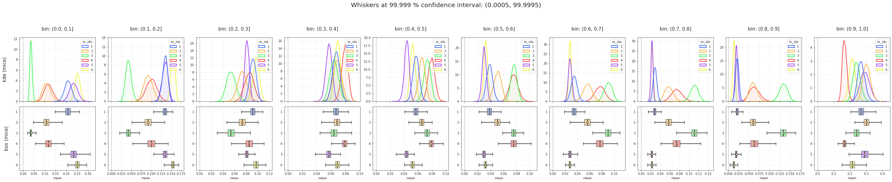
[e for e in os.listdir(figs_dir) if 'npy' in e]
['cut-oc_bins-10.npy', 'booted-oc_bins-10_boot-1e+04.npy']
SciPy Boot#
my_statistic = get_statistic_fn(
axis_sub=-1,
axis_ses=0,
axis_seed=1,
keepdims=False,
dtype=float,
)
n_resamples = 10000
batch = 2000
dlist = []
method = 'bca'
ci = 99.9
boot = sp_stats.bootstrap(
data=(data_all,),
statistic=my_statistic,
confidence_level=ci/100,
n_resamples=n_resamples,
batch=batch,
method=method,
random_state=mice.cfg.random_state,
)
boot.standard_error
array([[0.01424201, 0.00535805, 0.00485735, 0.00397629, 0.00371928, 0.00398988, 0.00439758, 0.00323872, 0.00352239, 0.01758454], [0.0140842 , 0.00833121, 0.00643357, 0.0053721 , 0.00357011, 0.00438428, 0.00472382, 0.00674219, 0.00695908, 0.01871863], [0.00456345, 0.00624264, 0.0064267 , 0.00481555, 0.00445535, 0.00376705, 0.00486817, 0.00616496, 0.00734718, 0.0202638 ], [0.0125659 , 0.00912745, 0.00617892, 0.00351437, 0.00341073, 0.00406372, 0.00505067, 0.00854501, 0.00985853, 0.01118936], [0.01645829, 0.00670721, 0.00240115, 0.00281473, 0.00250767, 0.00234332, 0.00206258, 0.00150486, 0.00231202, 0.02660409], [0.01027638, 0.00328249, 0.0036399 , 0.00219623, 0.00239537, 0.00183878, 0.00151675, 0.00204267, 0.0022742 , 0.01402824]])
100 * (1 - 0.05 / 6)
99.16666666666667
boot.confidence_interval
ConfidenceInterval(low=array([[0.16299788, 0.11439128, 0.07537326, 0.05456608, 0.04340583, 0.02504375, 0.02176093, 0.01916549, 0.01078964, 0.2278044 ], [0.06491725, 0.06595956, 0.05403557, 0.04996249, 0.05499547, 0.03282023, 0.04093808, 0.04026682, 0.04028609, 0.25489541], [0.0247164 , 0.02605457, 0.03580494, 0.04957356, 0.05540866, 0.06397393, 0.07346311, 0.09000358, 0.10071379, 0.18968931], [0.08005183, 0.0722386 , 0.06812345, 0.06505508, 0.06937702, 0.06241593, 0.06049158, 0.05238466, 0.03724037, 0.14488182], [0.17997978, 0.11064514, 0.07418794, 0.04728167, 0.03266405, 0.02248267, 0.02085926, 0.01799767, 0.0105893 , 0.20600311], [0.21356707, 0.14234903, 0.08646321, 0.06221028, 0.04551402, 0.02717492, 0.02391779, 0.01620615, 0.00533432, 0.1767775 ]]), high=array([[0.25374534, 0.14926265, 0.10515378, 0.07872001, 0.06680032, 0.04986906, 0.04949074, 0.03936925, 0.032732 , 0.33762556], [0.1501238 , 0.11857895, 0.09489875, 0.08547422, 0.077294 , 0.06057464, 0.06980939, 0.0824857 , 0.08383312, 0.37692558], [0.05402637, 0.06673029, 0.07587693, 0.07968841, 0.08357547, 0.08850651, 0.10464581, 0.13075589, 0.15078943, 0.31800211], [0.1571642 , 0.12974104, 0.10914885, 0.08733478, 0.0901859 , 0.08799022, 0.09096075, 0.1046824 , 0.09754219, 0.21083274], [0.28610653, 0.15097906, 0.09028617, 0.06519387, 0.04795752, 0.03673529, 0.03402107, 0.02758909, 0.02511773, 0.3743306 ], [0.27717635, 0.16383072, 0.10909534, 0.0754608 , 0.06126973, 0.03929939, 0.03313063, 0.0293177 , 0.01948093, 0.26717647]]))
file_name = f"scipy-boot-oc_bins-{num_cuts}_boot-{n_resamples:1.0e}"
save_obj(
obj={
'se': boot.standard_error,
'ci_low': boot.confidence_interval.low,
'ci_high': boot.confidence_interval.high,},
file_name=file_name,
save_dir=figs_dir,
mode='npy',
)
[PROGRESS] 'scipy-boot-oc_bins-10_boot-1e+04.npy' saved at /home/hadi/Documents/Ca-fMRI/processed/norm-global_parcel-spatial-sym_n-128/results/SVINET/fi gs_combined/real-p20-k6
'/home/hadi/Documents/Ca-fMRI/processed/norm-global_parcel-spatial-sym_n-128/results/SVINET/figs_combined/real-p20-k6/scipy-boot-oc_bins-10_boot-1e+04.npy'
dlist1, dlist2 = [], []
for i in range(k):
for j, intvl in enumerate(intervals):
dlist1.append({
'condition': ['real'] * len(real_sample),
'interval': [intvl] * len(real_sample),
'oc_idx': [i + 1] * len(real_sample),
'mean': real_sample[:, i, j],
})
dlist2.append({
'condition': ['boot'] * len(booted),
'interval': [intvl] * len(booted),
'oc_idx': [i + 1] * len(booted),
'mean': booted[:, i, j],
})
df_real = pd.DataFrame(merge_dicts(dlist1))
df_boot = pd.DataFrame(merge_dicts(dlist2))
t = abs(sp_stats.t.ppf(0.75, mice.cfg.num_subjects - 1))
q1 = real[0] - boot.standard_error * t
q3 = real[0] - boot.standard_error * t
dlist = []
ci_all = [95, 99.99, 99.999, 100 * (1 - 0.05 / 6)]
for ci in sorted(ci_all):
p = np.round(1 - ci / 100, 13)
t = abs(sp_stats.t.ppf(1 - p, mice.cfg.num_subjects - 1))
low = real[0] - boot.standard_error * t
high = real[0] + boot.standard_error * t
for i in range(k):
for j, intvl in enumerate(intervals):
_res = {
'low': low[i, j],
'Q1': q1[i, j],
'Q3': q3[i, j],
'high': high[i, j],
}
dlist.append({
'p': [p] * len(_res),
't': [t] * len(_res),
'ci': [ci] * len(_res),
'oc_idx': [i + 1] * len(_res),
'interval': [intvl] * len(_res),
'label': _res.keys(),
'value': _res.values(),
})
df_t = pd.DataFrame(merge_dicts(dlist))
df_t.loc[df_t.interval == intervals[-1]]
| p | t | ci | oc_idx | interval | label | value | |
|---|---|---|---|---|---|---|---|
| 36 | 0.05000 | 1.833113 | 95.000 | 1 | (0.9, 1.0] | low | 0.237742 |
| 37 | 0.05000 | 1.833113 | 95.000 | 1 | (0.9, 1.0] | Q1 | 0.257619 |
| 38 | 0.05000 | 1.833113 | 95.000 | 1 | (0.9, 1.0] | Q3 | 0.257619 |
| 39 | 0.05000 | 1.833113 | 95.000 | 1 | (0.9, 1.0] | high | 0.302211 |
| 76 | 0.05000 | 1.833113 | 95.000 | 2 | (0.9, 1.0] | low | 0.268470 |
| ... | ... | ... | ... | ... | ... | ... | ... |
| 919 | 0.00001 | 8.102058 | 99.999 | 5 | (0.9, 1.0] | high | 0.507092 |
| 956 | 0.00001 | 8.102058 | 99.999 | 6 | (0.9, 1.0] | low | 0.101344 |
| 957 | 0.00001 | 8.102058 | 99.999 | 6 | (0.9, 1.0] | Q1 | 0.205144 |
| 958 | 0.00001 | 8.102058 | 99.999 | 6 | (0.9, 1.0] | Q3 | 0.205144 |
| 959 | 0.00001 | 8.102058 | 99.999 | 6 | (0.9, 1.0] | high | 0.328659 |
96 rows × 7 columns
from matplotlib.path import Path
def modify_box(ax, q, axis='x'):
children = ax.get_children()
# fix box
pathpatch = children[6]
path = pathpatch.get_path()
vertices = path.vertices.copy()
vertices[0, 0 if axis == 'x' else 1] = q[1]
vertices[1, 0 if axis == 'x' else 1] = q[1]
vertices[2, 0 if axis == 'x' else 1] = q[2]
vertices[3, 0 if axis == 'x' else 1] = q[2]
vertices[4, 0 if axis == 'x' else 1] = q[2]
pathpatch.set_path(Path(vertices, path.codes))
# fix arms
children[0].set(**{'xdata' if axis == 'x' else 'ydata': (q[1], q[0])})
children[1].set(**{'xdata' if axis == 'x' else 'ydata': (q[2], q[3])})
children[2].set(**{'xdata' if axis == 'x' else 'ydata': (q[0], q[0])})
children[3].set(**{'xdata' if axis == 'x' else 'ydata': (q[3], q[3])})
return ax
x = rng.random(10000)
q = [2.5, 25, 50, 75, 97.5]
q = [-0.9, -0.25, 0.25, 0.75]
props = {
'boxprops': {'color': 'none', 'edgecolor': 'k', 'ls': '--'},
'medianprops': {'color': 'k'},
'whiskerprops': {'color': 'k'},
'capprops': {'color': 'k', 'linewidth': 1},
'flierprops': {'alpha': 0.5, 'zorder': 1},
}
fig, ax = create_figure()
sns.boxplot(x, ax=ax, **props)
ax.set_xlim(-1, 1)
_ = modify_box(ax, q)
ax.grid()
plt.show()

def plot_last_bin(
save_dir: str,
booted: np.ndarray,
df_real: pd.DataFrame,
standard_error: np.ndarray,
colors: Dict[int, str],
dist_names: List[str] = None,
method: str = 'bca',
figsize=(13, 9.5),
ci: float = 99.9, ):
from fitter import Fitter
props = {
'boxprops': {'color': 'none', 'edgecolor': 'k', 'linewidth': 1, 'ls': '--'},
'medianprops': {'color': 'k', 'linewidth': 1.3},
'whiskerprops': {'color': 'k', 'linewidth': 1},
'capprops': {'color': 'k', 'linewidth': 1},
}
meanprops = {
"marker": "o",
"markerfacecolor": "white",
"markeredgecolor": "k",
"markersize": "10",
}
dist_names = dist_names if dist_names else ['beta', 't']
ci_low = np.round((100 - ci) / 2, 10)
ci_high = np.round(100 - ci_low, 10)
intervals = df_real.interval.unique()
k = len(df_real.oc_idx.unique())
nrows = 2
ncols = int(np.ceil(k / nrows))
fig, axes = create_figure(
nrows=nrows,
ncols=ncols,
figsize=figsize,
style='ticks',
)
axes_twin = np.empty_like(axes)
for i, ax in enumerate(axes.ravel()):
f = Fitter(
data=booted[:, i, -1],
distributions=dist_names,
bins=500,
timeout=1000,
)
f.fit(progress=False)
for _d in dist_names:
pdf = make_pdf(
dist=_d,
params=f.fitted_param[_d],
whis=(ci_low / 100, ci_high / 100),
size=10000,
)
ax.plot(
list(pdf.index),
list(pdf.values),
color='r' if _d == 't' else 'k',
lw=1.5,
label=_d,
)
ax.legend(loc='upper right')
sns.histplot(
booted[:, i, -1],
color=colors[i + 1],
stat='density',
alpha=0.6,
ax=ax,
)
ax.grid(ls=':')
ax.set_title(f"OC{i + 1}")
if i // ncols == nrows - 1:
ax.set_xlabel('mean portion')
else:
ax.set_xlabel('')
ax_tx = ax.twinx()
_df = df_real.loc[
(df_real.oc_idx == i + 1) &
(df_real.interval == intervals[-1])
]
sns.boxplot(
data=_df,
x='mean',
showmeans=True,
meanprops=meanprops,
showfliers=False,
orient='h',
width=0.15,
ax=ax_tx,
**props,
)
ax_tx.set_ylim((0.15, -1.0))
# modify box
real = _df['mean'].mean()
# quartiles
t = abs(sp_stats.t.ppf(0.75, len(_df) - 1))
q1 = real - boot.standard_error[i, -1] * t
q3 = real + boot.standard_error[i, -1] * t
# whiskers
t = abs(sp_stats.t.ppf(ci / 100, len(_df) - 1))
low = real - boot.standard_error[i, -1] * t
high = real + boot.standard_error[i, -1] * t
ax_tx = modify_box(ax_tx, [low, q1, q3, high], 'x')
axes_twin.ravel()[i] = ax_tx
# change xlim
xlim = ax.get_xlim()
if xlim[0] > low - 0.01:
xlim = (low - 0.01, xlim[1])
if xlim[1] < high + 0.01:
xlim = (xlim[0], high + 0.01)
ax.set_xlim(xlim)
plt.draw()
for ax in axes.ravel():
ax.set_xticklabels([
np.round(float(e.get_text()), 2)
for e in ax.get_xticklabels()
])
msg = f"ci = {ci} % whiskers: [{ci_low}, {ci_high}] - method: {method}\n"
msg += "median and mean (white circle): 'actual' sample\n"
msg += "whiskers, caps, hist: 'bootstrapped' samples"
sup = fig.suptitle(msg, fontsize=17, y=1.05)
save_file = [
f"last-bin-{method}",
f"bins-{len(intervals)}",
f"boot-{len(booted):1.0e}",
]
save_file = f"{'_'.join(save_file)}.pdf"
save_file = pjoin(save_dir, save_file)
print(save_file)
save_fig(
fig=fig,
sup=sup,
save_file=save_file,
display=False,
multi=False,
)
print('done.')
return fig, axes, axes_twin
fig, axes, axes_twin = plot_last_bin(figs_dir, booted, df_real, boot.standard_error, svinet.colors, ci=99.9)
/home/hadi/Documents/Ca-fMRI/processed/norm-global_parcel-spatial-sym_n-128/results/SVINET/fi gs_combined/real-p20-k6/last-bin-bca_bins-10_boot-1e+04.pdf
done.
fig

def plot_last_bin(
save_dir: str,
booted: np.ndarray,
df_real: pd.DataFrame,
df_boot: pd.DataFrame,
colors: Dict[int, str],
method='percentile',
dist_names: List[str] = None,
figsize=(13, 9.5),
ci: float = 99.9, ):
from fitter import Fitter
props_boot = {
'boxprops': {'color': 'none', 'edgecolor': 'k', 'linewidth': 1},
'medianprops': {'color': 'none', 'linewidth': 0},
'whiskerprops': {'color': 'k', 'linewidth': 1},
'capprops': {'color': 'k', 'linewidth': 1},
'flierprops': {'alpha': 0.5, 'zorder': 1},
}
props_real = {
'boxprops': {'color': 'none', 'edgecolor': 'none', 'linewidth': 0},
'medianprops': {'color': 'k', 'linewidth': 1.5},
'whiskerprops': {'color': 'none', 'linewidth': 0},
'capprops': {'color': 'none', 'linewidth': 0},
'flierprops': {'alpha': 0.7, 'zorder': 1},
}
meanprops = {
"marker": "o",
"markerfacecolor": "white",
"markeredgecolor": "k",
"markersize": "10",
}
dist_names = dist_names if dist_names else ['beta', 't']
ci_low = np.round((100 - ci) / 2, 10)
ci_high = np.round(100 - ci_low, 10)
intervals = df_real.interval.unique()
k = len(df_real.oc_idx.unique())
nrows = 2
ncols = int(np.ceil(k / nrows))
fig, axes = create_figure(
nrows=nrows,
ncols=ncols,
figsize=figsize,
style='ticks',
)
for i, ax in enumerate(axes.ravel()):
f = Fitter(
data=booted[:, i, -1],
distributions=dist_names,
bins=500,
timeout=1000,
)
f.fit(progress=False)
for _d in dist_names:
pdf = make_pdf(
dist=_d,
params=f.fitted_param[_d],
whis=(ci_low / 100, ci_high / 100),
size=10000,
)
ax.plot(
list(pdf.index),
list(pdf.values),
color='r' if _d == 't' else 'k',
lw=1.5,
label=_d,
)
ax.legend(loc='upper right')
sns.histplot(
booted[:, i, -1],
color=colors[i + 1],
stat='density',
alpha=0.6,
ax=ax,
)
ax.grid(ls=':')
ax.set_title(f"OC{i + 1}")
ax_tx = ax.twinx()
_df = df_boot.loc[
(df_boot.oc_idx == i + 1) &
(df_boot.interval == intervals[-1])
]
sns.boxplot(
data=_df,
x='mean',
whis=(ci_low, ci_high),
showfliers=True,
orient='h',
width=0.15,
ax=ax_tx,
**props_boot,
)
_df = df_real.loc[
(df_real.oc_idx == i + 1) &
(df_real.interval == intervals[-1])
]
sns.boxplot(
data=_df,
x='mean',
showmeans=True,
meanprops=meanprops,
showfliers=True,
orient='h',
width=0.15,
ax=ax_tx,
**props_real,
)
ax_tx.set_ylim((0.15, -1.0))
if i // ncols == nrows - 1:
ax.set_xlabel('mean portion')
else:
ax.set_xlabel('')
plt.draw()
for ax in axes.ravel():
ax.set_xticklabels([
np.round(float(e.get_text()), 2)
for e in ax.get_xticklabels()
])
msg = f"ci = {ci} % whiskers: [{ci_low}, {ci_high}] - method: {method}\n"
msg += "median and mean (white circle): 'actual' sample\n"
msg += "whiskers, caps, hist: 'bootstrapped' samples"
sup = fig.suptitle(msg, fontsize=17, y=1.05)
save_file = [
f"last-bin-{method}",
f"bins-{len(intervals)}",
f"boot-{len(booted):1.0e}",
]
save_file = f"{'_'.join(save_file)}.pdf"
save_file = pjoin(save_dir, save_file)
print(save_file)
save_fig(
fig=fig,
sup=sup,
save_file=save_file,
display=False,
multi=False,
)
print('done.')
return fig, axes
fig, axes = plot_last_bin(figs_dir, booted, df_real, df_boot, svinet.colors, ci=99.9)
/home/hadi/Documents/Ca-fMRI/processed/norm-global_parcel-spatial-sym_n-128/results/SVINET/fi gs_combined/real-p20-k6/last-bin-percentile_bins-10_boot-1e+04.pdf
done.
fig
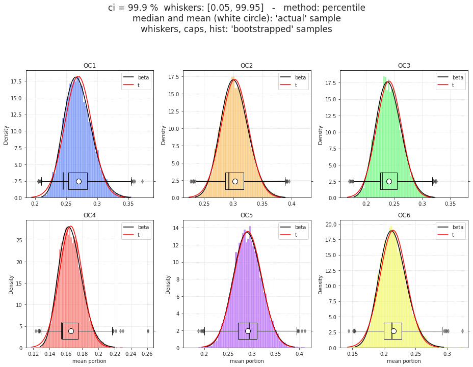
New, correct Fig#
real_sample = np.median(data_all, axis=2).mean(1, dtype='float128')
real_sample.shape, booted.shape, real.shape, data_all.shape
((10, 6, 10), (10000, 6, 10), (1, 6, 10), (10, 3, 943, 6, 10))
dlist1, dlist2 = [], []
for i in range(k):
for j, intvl in enumerate(intervals):
dlist1.append({
'condition': ['real'] * len(real_sample),
'interval': [intvl] * len(real_sample),
'oc_idx': [i + 1] * len(real_sample),
'mean': real_sample[:, i, j],
})
dlist2.append({
'condition': ['boot'] * len(booted),
'interval': [intvl] * len(booted),
'oc_idx': [i + 1] * len(booted),
'mean': booted[:, i, j],
})
df_real = pd.DataFrame(merge_dicts(dlist1))
df_boot = pd.DataFrame(merge_dicts(dlist2))
df_real.shape, df_boot.shape
((600, 4), (600000, 4))
figs, sups = plot_group(figs_dir, df_real, df_boot, figsize=(13.5, 11.3))
/home/hadi/Documents/Ca-fMRI/processed/norm-global_parcel-spatial-sym_n-128/results/SVINET/fi gs_combined/real-p20-k6/group_bins-10_boot-1e+04.pdf
done.
fig, axes = plot_last_bin(figs_dir, booted, df_real, df_boot, svinet.colors)
/home/hadi/Documents/Ca-fMRI/processed/norm-global_parcel-spatial-sym_n-128/results/SVINET/fi gs_combined/real-p20-k6/last-bin_bins-10_boot-1e+04.pdf
done.
fig

Integrate out communities#
np.nanmin(h_all), np.nanmax(h_all)
(0.04702574289752963, 1.0)
x = np.round(np.nansum(pi_all, axis=3).ravel(), 10)
collections.Counter(x).most_common()
[(1.0, 3857813), (0.0, 46207)]
np.isnan(h_all).sum(), np.isnan(pi_all).sum()
(46207, 277242)
np.where(np.nansum(pi_all, axis=3) == 0)
( array([0, 0, 0, ..., 9, 9, 9]), array([0, 0, 0, ..., 1, 1, 1]), array([ 0, 1, 2, ..., 942, 942, 942]), array([129, 129, 129, ..., 44, 113, 124]) )
pi_all[0, 0, 0, :, 129]
array([nan, nan, nan, nan, nan, nan])
rng = get_rng()
num_cuts = 10
bins = np.linspace(0, 1, num_cuts + 1)
intervals = pd.cut([], bins).value_counts().index
cut_nodes = np.ones((
mice.cfg.num_subjects,
mice.cfg.num_sessions,
min(seed_counts.values()),
num_nodes, num_cuts,
)) * -1
cut_h = np.zeros((
mice.cfg.num_subjects,
mice.cfg.num_sessions,
min(seed_counts.values()),
num_cuts,
))
for sub_i in tqdm(range(pi_all.shape[0])):
for ses_i in range(pi_all.shape[1]):
if not (sub_i == 1 and ses_i == 1):
continue
for seed_i in tqdm(range(pi_all.shape[2]), leave=False):
_h = h_all[sub_i, ses_i, seed_i]
_cut = pd.cut(np.round(_h, 2), bins)
counts = _cut.value_counts().values
portions = [c / sum(counts) for c in counts]
cut_h[sub_i, ses_i, seed_i] = portions
good_nodes = np.where(~np.isnan(_h))[0]
for node_i in good_nodes:
_cut = pd.cut(np.round(pi_all[sub_i, ses_i, seed_i, :, node_i], 2), bins)
counts = _cut.value_counts().values
portions = [c / sum(counts) for c in counts]
cut_nodes[sub_i, ses_i, seed_i, node_i] = portions
cut_nodes.shape, cut_h.shape
h = sp_stats.entropy(output['pi'], axis=0) / np.log(k)
sns.histplot(h)
<AxesSubplot:ylabel='Count'>
nrows = 2
ncols = int(np.ceil(num_cuts / nrows))
fig, axes = create_figure(nrows, ncols, (13.5, 5), 'ticks', 'all', 'all')
node = np.argmax(h)
for i, ax in enumerate(axes.ravel()):
sns.histplot(cut_nodes[1, 1, :, node, i], bins=np.linspace(0.1, 1, 10), ax=ax, stat='density')
ax.set_title(f"bin = {intervals[i]}")
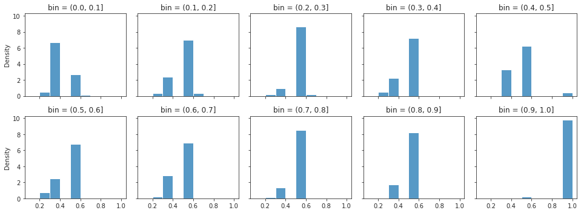
sns.histplot(h_all[1, 1, :, node])
<AxesSubplot:ylabel='Count'>
pd.cut([0, 0.04, 0.2, 0.33, 0.23, 0.25, 0.26, 1, 0.54, 0, 0, np.nan, np.nan], np.linspace(0, 1, 11)).value_counts().values
array([1, 1, 3, 1, 0, 1, 0, 0, 0, 1])
for key, sv in tqdm(output['svinet_all'].items()):
sub, ses, _ = mice.looper[key]
if not (sub == 2 and ses == 2):
continue
reord_ids = list(output['perms'][key].values())
g = sv.gam_all[:, reord_ids, :]
pi = g / g.sum(1, keepdims=True)
seed_ids = rng.choice(len(pi), min(seed_counts.values()), False)
pi = pi[seed_ids]
h = sp_stats.entropy(pi, axis=1) / np.log(k)
entropies[sub - 1, ses - 1] = h
nans = np.isnan(pi).sum(0).sum(0).astype(bool)
good_nodes = np.where(~nans)[0]
for i in range(len(pi)):
mem_cut = pd.cut(np.round(h[i], 2), bins)
mem_cut = mem_cut.value_counts()
counts = mem_cut.values
portions = [c / sum(counts) for c in counts]
entropies_cut[sub - 1, ses - 1, i] = portions
for j in good_nodes:
mem_cut = pd.cut(np.round(pi[i, :, j], 2), bins)
mem_cut = mem_cut.value_counts()
counts = mem_cut.values
portions = [c / sum(counts) for c in counts]
pi_cut_nodes[sub - 1, ses - 1, i, j] = portions
pi_cut_nodes.shape
(10, 3, 943, 138, 20)
nans.sum()
8
np.where(cut_nodes[1, 1] == -1)
( array([ 0, 0, 0, ..., 942, 942, 942]), array([ 6, 6, 6, ..., 120, 120, 120]), array([0, 1, 2, ..., 7, 8, 9]) )
cut_nodes[1, 1].shape
(943, 138, 10)
np.nanmin(h)
0.049474011436324614
x = h_all[~np.isnan(h_all)].ravel()
sns.histplot(x)
plt.yscale('log')
plt.grid()

h = np.nanmean(np.nanmean(np.nanmedian(h_all, 2), 1), 0)
h.shape
(138,)
plt.plot(h)
[<matplotlib.lines.Line2D object at 0x7f85012a1d30>]
mask = svinet.pi2arr(h.reshape(1, -1), cortex_only=True)[1]
plt.imshow(mask)
<matplotlib.image.AxesImage object at 0x7f85045604c0>
h = sp_stats.entropy(output['pi'], axis=0) / np.log(k)
mask = svinet.pi2arr(h.reshape(1, -1), cortex_only=True)[1]
plt.imshow(mask, vmin=min(h), vmax=max(h))
plt.colorbar()
<matplotlib.colorbar.Colorbar object at 0x7f8502139640>

for key, gam in output['gamma_all'].items():
_pi = gam / gam.sum(0, keepdims=True)
h = sp_stats.entropy(_pi, axis=0) / np.log(k)
mask = svinet.pi2arr(h.reshape(1, -1), cortex_only=True)[1]
plt.imshow(mask, vmin=np.nanmin(h), vmax=np.nanmax(h))
plt.colorbar()
plt.title(f"{key}, min h: {np.nanmin(h):.1f}, max h: {np.nanmax(h):.1f}")
plt.show()

 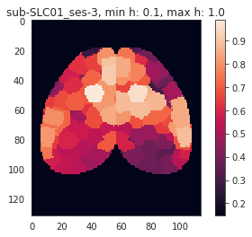
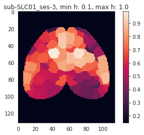
 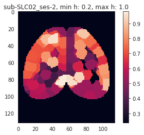
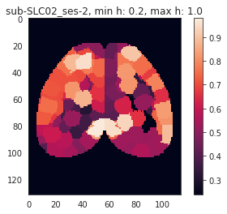

 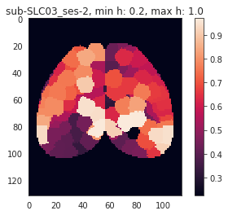
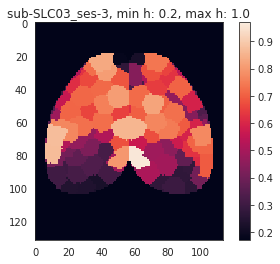
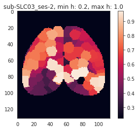
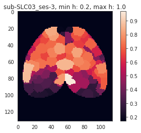
 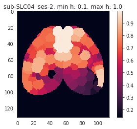
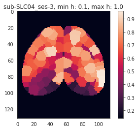
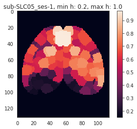
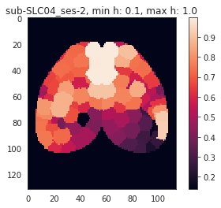
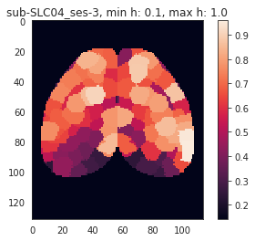
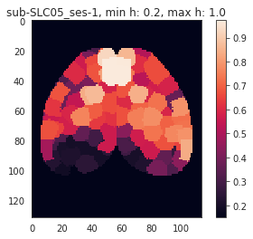


 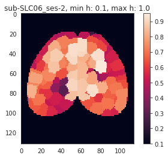
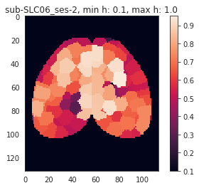

 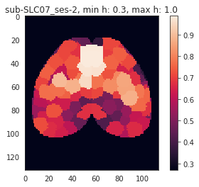
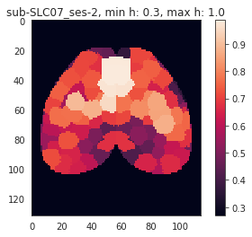

 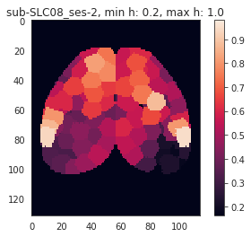
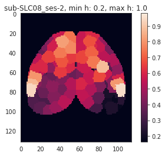
 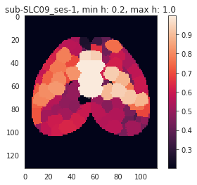
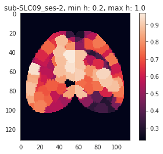
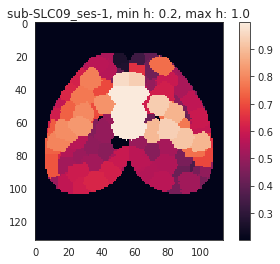
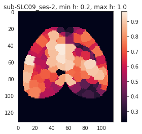

 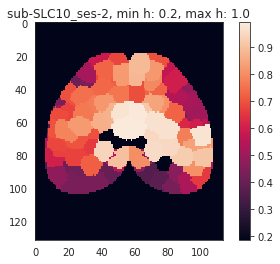
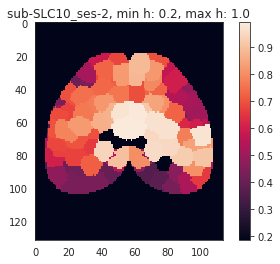

fig, axes = create_figure(1, k, (13.5, 4) if k == 7 else (13.5, 2.1))
gam_arr = svinet.pi2arr(_pi, cortex_only=True)
for ax, idx in zip(axes.ravel(), range(1, k + 1)):
im = ax.imshow(gam_arr[idx], cmap='rocket', vmin=0)
ax.set_title(f"oc_{idx}")
plt.colorbar(im, ax=ax)
remove_ticks(axes)
plt.show()

h
array([0.41492661, 0.82672472, 0.68213581, 0.49205765, 0.8520797 , 0.48596108, 0.62768482, 0.5790587 , 0.35321321, 0.71733458, 0.74400477, 0.40248991, 0.72536875, 0.53442075, 0.53344934, 0.55481887, 0.78985376, 0.46669976, 0.32517561, 0.75238062, 0.76862138, 0.64853976, 0.8304846 , 0.64623488, 0.63306944, 0.73964554, 0.49402841, 0.74068415, 0.66310339, 0.73283696, 0.67956947, 0.71775953, 0.59656554, 0.56859275, 0.51933401, 0.48605415, 0.61826302, 0.64192505, 0.7573 , 0.67792683, 0.82294287, 0.55990795, 0.58558356, 0.68144527, 0.76534287, 0.81255845, 0.80537844, 0.68901322, 0.68844073, 0.78444326, 0.29707637, 0.61358312, 0.64504729, 0.70439327, 0.62323062, 0.63554016, 0.1975646 , 0.69376857, 0.33557285, 0.5439305 , 0.60106718, 0.52730022, 0.5776906 , 0.6279179 , 0.18268549, 0.18612312, 0.20793517, 0.18336582, 0.19350218, 0.83474386, 0.80962794, 0.644751 , 0.66527682, 0.83615909, 0.66426029, 0.6589592 , 0.83339958, 0.57346567, 0.5123289 , 0.81023408, 0.55602042, 0.67613822, 0.633046 , 0.3811772 , 0.53047392, 0.78239416, 0.50125741, 0.27102729, 0.83035434, 0.62368447, 0.52923295, 0.45612928, 0.44468127, 0.78958639, 0.89558963, 0.38774349, 0.6337868 , 0.66035631, 0.9178147 , 0.47338839, 0.65392301, 0.40807053, 0.26077487, 0.73143169, 0.77507828, 0.65866328, 0.77807878, 0.66824165, 0.77633856, 0.7954267 , 0.77265986, 0.80269134, 0.67325811, 0.78316087, 0.68911306, 0.73735492, 0.66862073, 0.66567009, 0.74462057, 0.2642169 , 0.69185219, 0.62804781, 0.68769028, 0.29973297, 0.48336095, 0.62051382, 0.44395356, 0.24588082, 0.26497212, 0.42352269, 0.23573852, 0.28453482, 0.48955559, 0.71312291, 0.29284029, 0.53614403, 0.28763104, 0.20043885])
fig, axes = create_figure(1, k, (13.5, 4) if k == 7 else (12, 6))
gam_arr = svinet.pi2arr(output['gam'], cortex_only=True)
for ax, idx in zip(axes.ravel(), range(1, k + 1)):
im = ax.imshow(gam_arr[idx], cmap='rocket', vmin=0)
ax.set_title(f"oc_{idx}")
remove_ticks(axes)
plt.show()

fig, axes = create_figure(1, k, (13.5, 4) if k == 7 else (12, 6))
gam_arr = svinet.pi2arr(np.nanmean(np.nanmean(np.nanmean(pi_all, 2), 1), 0), cortex_only=True)
for ax, idx in zip(axes.ravel(), range(1, k + 1)):
im = ax.imshow(gam_arr[idx], cmap='rocket', vmin=0)
ax.set_title(f"oc_{idx}")
remove_ticks(axes)
plt.show()
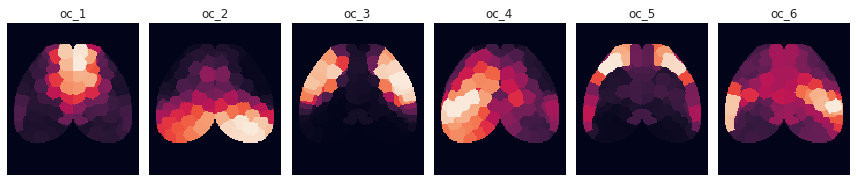
fig, axes = create_figure(1, k, (13.5, 4) if k == 7 else (12, 6))
_pi = np.nanmean(np.nanmean(np.nanmedian(pi_all, 2), 1), 0)
gam_arr = svinet.pi2arr(_pi, cortex_only=True)
for ax, idx in zip(axes.ravel(), range(1, k + 1)):
im = ax.imshow(gam_arr[idx], cmap='rocket', vmin=0)
ax.set_title(f"oc_{idx}")
remove_ticks(axes)
plt.show()
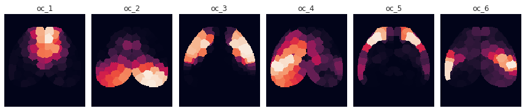
_pi.sum(0)
array([0.86915131, 0.80769064, 0.68585145, 0.84495132, 0.81940703, 0.90601819, 0.51931935, 0.76145654, 0.87049879, 0.91355648, 0.82592787, 0.93105628, 0.82785608, 0.44383345, 0.90700943, 0.82204491, 0.90797154, 0.91123843, 0.91599848, 0.89319675, 0.91999414, 0.48064286, 0.85699364, 0.92267711, 0.54079846, 0.81310005, 0.91735204, 0.90612374, 0.84055286, 0.84184984, 0.53259297, 0.84902949, 0.92199449, 0.83005686, 0.56805971, 0.9347367 , 0.40826845, 0.72054241, 0.83684855, 0.87189922, 0.85352341, 0.89596672, 0.64764493, 0.85300103, 0.68621972, 0.85495402, 0.72024833, 0.90466533, 0.882262 , 0.8740084 , 0.72132095, 0.88900583, 0.41619105, 0.87687432, 0.83173786, 0.91309939, 0.79673572, 0.91641008, 0.947285 , 0.90740974, 0.90908457, 0.9276417 , 0.90378401, 0.92103114, 0.66407489, 0.73876886, 0.70249825, 0.65218873, 0.62804428, 0.87443068, 0.80796386, 0.68710349, 0.78768301, 0.71781665, 0.9115713 , 0.45040063, 0.77128924, 0.82511331, 0.90020673, 0.8354266 , 0.94405628, 0.70772388, 0.47309757, 0.91423153, 0.80927791, 0.77610559, 0.88702741, 0.93279967, 0.86769451, 0.9000489 , 0.51304632, 0.84968047, 0.93693792, 0.57917822, 0.66766948, 0.9460923 , 0.92544892, 0.805323 , 0.74718397, 0.53708925, 0.7861095 , 0.9549686 , 0.87798446, 0.59320339, 0.93686589, 0.47534892, 0.70783463, 0.68877479, 0.64919124, 0.83361853, 0.89794165, 0.65013318, 0.68721234, 0.72926253, 0.65405101, 0.72147567, 0.72670032, 0.75537634, 0.66468116, 0.49857777, 0.79296444, 0.43376191, 0.72971211, 0.87515749, 0.90859919, 0.50706726, 0.87909335, 0.93620622, 0.89373769, 0.82707355, 0.95141635, 0.92901826, 0.92263683, 0.64463891, 0.61275215, 0.51162872, 0.45717716, 0.44453689])
nrows = 4
ncols = int(np.ceil(num_cuts / nrows))
fig, axes = create_figure(nrows, ncols, (13.5, 9), 'ticks', 'all', 'all')
node = 47
for i, ax in enumerate(axes.ravel()):
sns.histplot(pi_cut[1, 1, :, node, i], bins=np.linspace(0, 1, 11), ax=ax, stat='density')
ax.set_title(f"bin = {intervals[i]}")
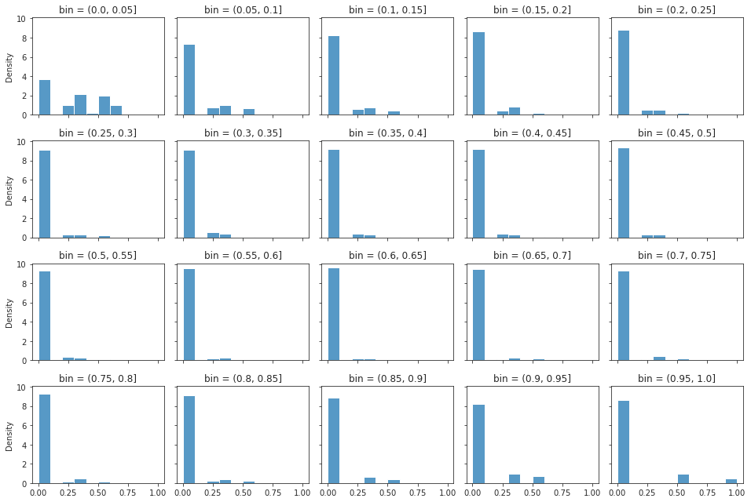
sns.histplot(entropies[1, 1, :, node], bins=np.linspace(0, 1, 101))
<AxesSubplot:ylabel='Count'>

pd.cut([0,0,0,0,0,0,0.54,0,0,0,0.05, 0.1], np.linspace(0, 1, 11)).value_counts().values
array([2, 0, 0, 0, 0, 1, 0, 0, 0, 0])
data_all.dtype
dtype('float64')
sns.histplot(data_all[1, 1].mean(0)[:, 4], bins=bins)
plt.grid()

sns.histplot(data_all[1, 1].ravel())
plt.grid()
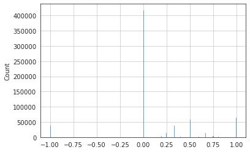
file_name = f"cut-node_bins-{num_cuts}"
save_obj(
obj=data_all,
file_name=file_name,
save_dir=figs_dir,
mode='npy',
)
[PROGRESS] 'cut-node_bins-5.npy' saved at /home/hadi/Documents/Ca-fMRI/processed/norm-global_parcel-spatial-sym_n-128/results/SVINET/fi gs_combined/real-p20-k6
'/home/hadi/Documents/Ca-fMRI/processed/norm-global_parcel-spatial-sym_n-128/results/SVINET/figs_combined/real-p20-k6/cut-node_bins-5.npy'
nans = np.isnan(data_all).sum(2).sum(-1).astype(bool)
nans = np.where(nans)
nans
( array([0, 0, 0, 1, 1, 1, 1, 1, 1, 1, 1, 1, 1, 1, 1, 1, 2, 2, 2, 3, 3, 4, 4, 4, 4, 4, 5, 5, 7, 7, 7, 7, 7, 7, 7, 7, 8, 8, 8, 8, 8, 8, 8, 8, 8, 9, 9, 9, 9]), array([0, 1, 2, 0, 0, 0, 1, 1, 1, 1, 1, 1, 1, 1, 2, 2, 0, 1, 1, 0, 1, 1, 1, 1, 2, 2, 1, 2, 0, 0, 1, 1, 1, 1, 2, 2, 0, 0, 0, 0, 0, 1, 2, 2, 2, 1, 1, 1, 1]), array([129, 76, 76, 12, 81, 125, 6, 15, 81, 103, 108, 112, 117, 120, 12, 81, 22, 0, 124, 34, 49, 7, 76, 135, 34, 44, 103, 118, 103, 125, 7, 56, 81, 103, 42, 103, 34, 44, 76, 81, 103, 44, 42, 81, 102, 38, 44, 113, 124]) )
pi.shape
(943, 6, 138)
np.where(~np.isnan(pi).sum(0).sum(0).astype(bool))[0]
array([ 0, 1, 2, 3, 4, 5, 6, 7, 8, 9, 10, 11, 12, 13, 14, 15, 16, 17, 18, 19, 20, 21, 22, 23, 24, 25, 26, 27, 28, 29, 30, 31, 32, 33, 34, 35, 36, 37, 38, 39, 40, 41, 42, 43, 44, 45, 46, 47, 48, 49, 50, 51, 52, 53, 54, 55, 56, 57, 58, 59, 60, 61, 62, 63, 64, 65, 66, 67, 68, 69, 70, 71, 72, 73, 74, 75, 76, 77, 78, 79, 80, 81, 82, 83, 84, 85, 86, 87, 88, 89, 90, 91, 92, 93, 94, 95, 96, 97, 98, 99, 100, 101, 102, 103, 104, 105, 106, 107, 108, 109, 110, 111, 112, 113, 114, 115, 116, 117, 118, 119, 120, 121, 122, 123, 124, 125, 126, 127, 128, 129, 130, 131, 132, 133, 134, 135, 136, 137])
data_all[0, 0, ...].shape
(943, 138, 5)
sns.kdeplot(data_all[0, 0, ...].mean(1)[:, 3])
<AxesSubplot:>

n_boot = int(1e4)
booted, real = bootstrap(data_all, n_boot, rng=rng)
booted, real = booted.astype(float), real.astype(float)
booted.shape